3 Uniform motion along a line¶
3.1 Describing uniform motion¶
Uniform motion along a line is the very special kind of motion that occurs when an object moves with unvarying speed in a fixed direction. During a fixed period of time, such as one second, an object in uniform motion will always cover the same distance, no matter when the period begins. This is the kind of motion associated with traffic-free motoring along straight roads, with uninterrupted train journeys along straight tracks, and with unhindered straight and level flying (provided the distances involved are sufficiently small that the curvature of the Earth can be ignored).
Table 4 shows some typical values of position and time for a pedestrian and a car that are both in a state of uniform motion. The corresponding position-time graphs are shown in Figure 12a and b.
t/s | xped/m | xcar/m |
|---|---|---|
0 | −20 | 30 |
10 | −10 | 60 |
20 | 0 | 90 |
30 | 10 | 120 |
40 | 20 | 150 |
50 | 30 | 180 |
60 | 40 | 210 |

Figure 12: Position-time graphs for the positions of (a) a pedestrian and (b) a car, based on Table 4
As you can see, both are straight-line graphs, as is characteristic of uniform motion. The graphs indicate that in each case the quantities being plotted are related by an equation of the general form

where A and B are constants. The two parts of Figure 12 simply correspond to different values of the constants A and B. In fact, as you will see later, by choosing appropriate values for A and B, Equation 3 can be used to represent any straight line that can be drawn on the position-time graph, except one that runs parallel to the vertical axis. In view of this you will not be surprised to learn that any equation of the general form x = At + B may be referred to as the equation of a straight line, irrespective of the particular constants and variables that it involves.
Understanding the link between equations (such as Equation 3) and graphs (such as those in Figure 12) is of vital importance throughout physics. Broadly speaking, any equation that relates two variables can be represented as a graph, and any graph showing how one quantity varies with another can be represented by an equation. (There are exceptions to this broad statement, but they tend to be rather unphysical, and won’t be considered here.) The skill of looking at a simple equation and visualising it as a graph is one that is well worth developing. Many physicists find that visualisation helps to bring equations to life and makes it possible to look ‘into’ equations rather than merely looking ‘at’ them. The equation of a straight line that describes uniform motion is a good place to start developing this skill.
In the next two subsections you will learn how the constants A and B in the equation of a straight line determine the slope and positioning of the corresponding line, and what those features represent physically in the case of a position-time graph.
t/s | (xcar − xped)/m |
|---|---|
0 | 50 |
10 | 70 |
20 | 90 |
30 | 110 |
40 | 130 |
50 | 150 |
60 | 170 |
Question 7¶
Question¶
Use Table 5 to plot a graph showing how the displacement of the car from the pedestrian varies with time. Describe your graph in words and write down the general form of the equation that describes your graph.
Answer¶
The displacement of the car from the pedestrian is plotted in Figure 13. The significant feature is that we get a straight line and consequently the relative motion is uniform, i.e. at constant speed. The straight line does not run through the origin, so this curve is of the general form x = At + B, where x stands for xcar − xped in this case.
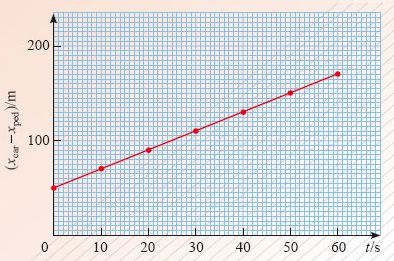
Figure 13: The result of plotting the displacements in Table 5
3.2 Constant velocity and the gradient of the position-time graph¶
Two things you will almost certainly want to know about any particle undergoing uniform motion are ‘how fast is it travelling?’ and ‘in which direction is it moving?’ The physical quantity that provides both these items of information is the particle’s velocity. This is defined as the rate of change of the particle’s position with respect to time, and has a constant value for each case of uniform motion along a line.
velocity = rate of change of position with respect to time.
In the case of the car whose position-time graph is shown in Figure 12b, if we choose two different times, say, t1 = 40 s and t2 = 50 s, then in the time interval between t1 and t2, the car moves from x1 = 150 m to x2 = 180 m. It follows that the rate of change of position of the car is given by the ratio
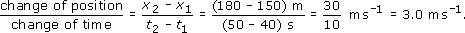
We therefore say that the velocity of the car is 3.0 metres per second along the x-axis, which we write using the abbreviation m s−1.
More generally, if any particle moves uniformly along the x-axis, so that its position-time graph is a straight line, then the constant velocity vx (’ v sub x’) of that particle is given by
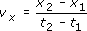
where x1 is the particle’s position at time t1, and x2 is its position at time t2. Note that the velocity may be positive or negative, depending on whether the particle’s position coordinate is increasing or decreasing with time. Also note that for uniform motion the velocity is independent of the particular values of t1 and t2 that are chosen.
Question 8¶
Question¶
Determine the velocity of the car by making measurements on the graph in Figure 12b in the interval from 50 s to 60 s.
Answer¶
Using and Figure 12b we obtain
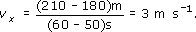
A point to note here is that choosing such closely separated values as t = 50 s and t = 60 s makes the evaluation of the velocity trickier, and more prone to error than would have been the case if more widely separated values had been chosen. When evaluating a gradient from a graph, it is always wise to use the widest convenient range of values on the horizontal axis.
In everyday speech the terms velocity and speed are used interchangeably. However, in physics, the term speed is reserved for the magnitude of the velocity, i.e. its value neglecting any overall minus sign. So, if a particle has velocity vx = −5 m s−1, then its speed is v = 5 m s−1, where
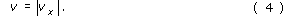
Speed is a positive quantity telling us how rapidly the particle is moving but revealing nothing about its direction of motion.
The subscript x in vx may seem a bit cumbersome, but it is an essential part of the notation. The subscript reminds us that we are dealing with motion along the x-axis. In later work, we will need to use two or sometimes three axes, so by including the subscript at this stage, we will be able to use the same notation throughout. Be careful to include the subscript x in your written work and make sure that it is small enough and low enough to be read as a subscript - don’t risk having vx misinterpreted as vx, i.e. v times x.
Another piece of shorthand that you will find useful concerns the upper case Greek letter delta, Δ. If a quantity such as x changes its value from x1 to x2, then the change in the value of x is conventionally written as Δx, and read as ‘delta ex’. Thus
Δx = x2 − x1.
So, Δx and Δt mean the changes in x and t; they do not mean Δ times x or Δ times t. You should always think of the Δ and the symbol that follows it as a single entity; the Δ symbol by itself has no quantitative meaning. Using this notation, the expression for vx above can be written as

In graphical terms, the velocity Δx/Δt of a uniformly moving particle is indicated by the slope of its position-time graph. The steepness of the line represents the speed of the particle, while the orientation of the line - bottom left to top right, or top left to bottom right - indicates the direction of motion. If the graph of x against t is a straight line, then the ratio of the change in x to the corresponding change in t (that is Δx/Δt) is called the gradient of the graph. A line that slopes from bottom left to top right indicates that a positive change in t corresponds to a positive change in x, consequently such a line has positive gradient. Similarly, a line sloping from top left to bottom right indicates that a positive change in t corresponds to a negative change in x and consequently to a negative gradient. This gives us another way of describing velocity:
the velocity of a particle = the gradient of its position-time graph
Question 9¶
Question¶
Figure 14 shows the position-time graphs for four different objects (A, B, C and D) each moving uniformly with a different constant velocity. The position and time scales are the same in each case.
List the objects in order of increasing speed.
Which of the objects have positive velocity?
List the objects in order of increasing velocity.
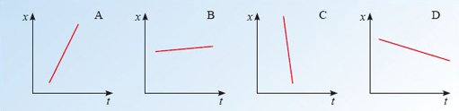
Figure 14: Straight line position-time graphs for Self-assessment question 9
Answer¶
The speed is given by the magnitude of Δx/Δt obtained from the velocity-time graph. In the order of increasing speed, the objects are B, D, A, C.
The objects with positive velocity have positive values of Δx/Δt, these are A and B.
Treating large negative values as being less than small negative values, and any negative value as less than any positive value, as is conventional, the list is C, D, B, A.
The gradient of a graph is one of the most important concepts of this course. It is important that you should be able to evaluate gradients, and that you should be able to distinguish graphs with positive gradients from those with negative gradients. It is also important that you should be able to interpret gradients physically as rates of change. In this discussion of position-time graphs the gradient represents velocity, but in other contexts, where quantities other than x and t are plotted, the gradient may have a very different interpretation. Figure 15, for example, shows how the average temperature T of the atmosphere depends on the height h above sea-level. The gradient of this graph, ΔT/Δh, describes the rate at which temperature changes with height.

Figure 15: A graph of average atmospheric temperature T against height h above sea-level
Question 10¶
Question¶
Estimate the gradient of the graph in Figure 15. (The use of the word ‘estimate’ implies that you do not need to take great care over the values you read from the graph, but you should take care over matters such as signs and units of measurement.)
Answer¶
The gradient of the temperature-height graph is

With h1 = 0 and h2 = 2 km, Figure 15 shows that T1 = 20 °C and T2 = 6 °C.
It follows that the gradient is
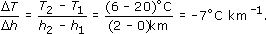
Note that care has to be taken to arrange the values in the correct order when performing the subtractions if the right sign (minus in this case) is to be obtained.
3.3 Initial position and the intercept of the position-time graph¶
The uniform motion of a particle is such a simple form of motion that apart from enquiring about the particle’s velocity, the only other kinematic question you can ask is ‘where was the particle at some particular time?’ The most common way of answering this question is to specify the initial position of the particle, that is, its position at time t = 0 s.
Although it is common to refer to the position at t = 0 as the ‘initial position’ it is also possible, and sometimes more convenient, to associate the initial position with some other time.
The initial position of a uniformly moving particle is easily determined from its position-time graph. It’s just the value of x when t = 0, i.e. the value of x at which the straight line crosses the vertical axis through the origin. In Figure 12a, for example, it is x = −20 m. This value is generally referred to as the intercept.
One point to bear in mind though; it is sometimes advantageous to draw position-time graphs that do not include the origin (for instance, you might be asked to draw a graph for the period from t = 100 s to t = 110 s). When dealing with such graphs do not make the mistake of thinking that the value at which the line crosses the vertical axis is the intercept. You can only read the intercept directly from the graph if the vertical axis passes through the zero value on the horizontal axis.
A little thought should convince you that the gradient and the intercept of a straight line entirely determine that line. In the same way, the velocity and the initial position of a uniformly moving particle entirely determine the motion of that particle. In the next subsection you will learn how these graphical and physical statements can be represented algebraically, in terms of equations.
3.4 The equations of uniform motion¶
It has already been said that the straight-line graph of any uniform motion can be represented by an equation of the general form
where A and B are constants. Different cases of uniform motion simply correspond to different values for the constants A and B. Let us now investigate this equation to see how it conveys information about gradients and intercepts, or equivalently, uniform velocities and initial positions.
To start with, note that according to Equation 3, the position of the particle when t = 0 is just x = B. Thus B represents the initial position of the particle, the intercept of its position-time graph.
In a similar way, note that according to Equation 3, at time t = t1 the position of the particle, let’s call it x1, is given by x1 = At1 + B; and at some later time t = t2 the position of the particle is x2 = At2 + B. Now, as we have already seen, the velocity of a uniformly moving particle is defined by
so, substituting the expressions for x1 and x2 that we have just obtained from Equation 3 we find that in this particular case

Thus, the constant A in Equation 3 represents the particle’s velocity, i.e. the gradient of its position-time graph.
We can now read the equation of a straight line, interpreting it graphically or physically. It is

The physical significance of the constants A and B can be emphasised by using the symbols vx and x0 in their place. Doing this, we obtain the standard form of the uniform motion equations
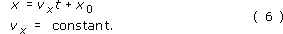
So, the uniform motion of the car we have been considering, which has velocity vx = 3.0 m s−1 and initial position x0 = 30 m, can be described by the equation

This contains just as much information as the graph in Figure 12b.
Question 11¶
Question¶
Write down the equation that describes the uniform motion of the pedestrian who was the subject of Figure 12a.
Answer¶
The equation will have the general form of Equation 6a, with velocity vx = 1 m s−1 (found from the gradient) and initial position x0 = − 20 m (found from the value of x when t = 0). Consequently the required equation may be written:

A pictorial interpretation of Equation 6a is given in Figure 16.
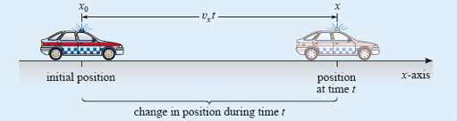
Figure 16: A pictorial interpretation of the equation of uniform motion
Equations have the great advantage that they can be rearranged to make them fit the problem at hand. For instance, if you were flying at constant velocity from Paris to Rome, you might well be more interested in your displacement from Paris rather than your position in some arbitrary coordinate system. In mathematical terms, you might be more interested in sx = x − x0 rather than x itself. Equation 6a can be rearranged to suit this interest by subtracting x0 from each side:
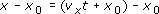
and this may be rewritten in the compact form
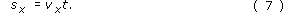
Remembering that vx is a constant when the motion is uniform, Equation 7 is equivalent to Equation 6a. It relates the displacement from the initial position directly to the time of flight and thus facilitates working out the distance travelled,

The crucial point to remember when manipulating an equation is that both sides of an equation represent the same value. So, if you add or subtract a term on one side of an equation, you must add or subtract an identical term on the other side. The same principle applies to multiplication and division, and to other operations such as taking magnitudes, squaring or taking square roots. (In the latter case you must remember that a positive quantity generally has two square roots; 2 is a square root of 4, but so is −2.) There are two rules to bear in mind when rearranging equations:
When one side of an equation consists of several terms added together, each of those terms must be treated in the same way. (It’s no good multiplying the first term on one side of an equation by some quantity if you forget to do the same to all the other terms on that side.)
When dividing both sides of an equation by some quantity you must ensure that the quantity is not zero. (For instance, it is only legitimate to divide both sides of Equation 7 by x − x0if x ≠ x0, i.e. if x is not equal to x0.)
The following question is quite straightforward, and there are many ways of answering it, but each will require you to manipulate the uniform motion equations to some extent. As you work out your answer think carefully about each of the procedures you are performing and write it out in words.
Question 12¶
Question¶
When the time on a certain stop-watch is 100 s, a vehicle is positioned at x = −2 m with respect to a certain one-dimensional coordinate system. If the velocity of the vehicle is −12 m s−1, find its position when the stop-watch shows 250 s.
Answer¶
Since vx = constant in this case, the motion is described by the uniform motion equation x = vxt + x0. However, on this occasion we are not given the value of x0, though we are given enough information to work it out. Substituting x = −2 m and t = 100 s into the equation we find
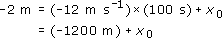
Adding 1200 m to both sides shows that 1198 m = x0.
It follows that for this particular motion the equation of uniform motion takes the form x = (−12 m s−1)t + (1198 m).
Consequently, when t = 250 s,
x = −3000 m + 1198 m = − 1802 m.
An alternative method that requires slightly fewer manipulations may be based on the definition of the gradient and the given value of the velocity.
3.5 Velocity-time and speed-time graphs¶
Just as we may plot the position-time graph or the displacement-time graph of a particular motion, so we may plot a velocity-time graph for that motion. By convention, velocity is plotted on the vertical axis (since velocity is the dependent variable) and time (the independent variable) is plotted on the horizontal axis. In the special case of uniform motion, the velocity-time graph takes a particularly simple form - it is just a horizontal line, i.e. the gradient is zero. Examples are given in Figure 17; notice that the velocity can be positive or negative, depending on the direction of motion.

Figure 17: Velocity-time graphs for uniform motion
Rather than plotting the velocity it is sometimes useful to plot the magnitude of the velocity, in other words, the speed. The resulting plots are speed-time graphs and examples are shown in Figure 18. Notice how all of the speeds are positive; in particular, the velocity of −1.5 m s−1 in Figure 17 corresponds to a speed of 1.5 m s−1 in Figure 18.
Clearly, a speed-time graph provides less information than a velocity-time graph, but it may be sufficient. The next time you buy a Ferrari, you may well enquire about its top speed, but you are unlikely to ask ‘in which direction?’

Figure 18: Speed-time graphs for uniform motion, corresponding to the velocity-time graphs shown in Figure 17
3.6 The signed area under a constant velocity-time graph¶
There is a simple feature of uniform velocity-time graphs that will be particularly useful to know about when we come to consider non-uniform motion in the next section. It concerns the relationship between the velocity-time graph and the change in position over a given time interval. Consider the following problem. A vehicle travels at a velocity vx = 12 m s−1 for 4 s. By how much does its position change over that interval?
The answer, from Equation 7, is 48 m. However, for our present purposes it is more instructive to work from the definition of uniform velocity (Equation 5), which may be rearranged by multiplying both sides of the equation by (t2 − t1) to give
x2 − x1 = vx (t2 − t1).
This tells us that the change in position during a given time interval is equal to the velocity multiplied by the time interval. So, a vehicle which travels at a constant velocity vx = 12 m s−1 over a time interval Δt = 4 s will change its position coordinate by Δx = 48 m.
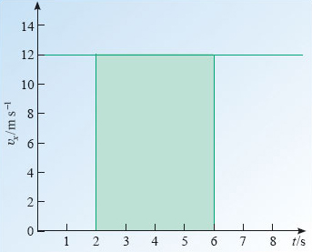
Figure 19: The area under a velocity-time graph
Now look at the velocity-time graph for this vehicle, which is given in Figure 19. The colour-shaded region corresponding to the 4 s interval between t = 2 s and t = 6 s is an example of an area under the graph: that is an area bounded by the plotted line, the horizontal axis and two vertical lines. The important point to note about this region is its area - not its physical area in terms of m2 of paper, but rather its area in terms of the units used on the axes of the graph. The area of a rectangle is the product of the lengths of two adjacent sides. So in Figure 19 the area under the graph is
vx × Δt = (12 m s−1) × (4 s) = 48 m.
Clearly, the area under the velocity-time graph, between the specified times, is exactly equal to the change in position coordinate between those times. In case you are worried that this relationship will break down if the velocity is negative, as in Figure 20, it should be added that areas that hang below the horizontal axis are conventionally regarded as negative areas. In this sense the area under a graph is a signed quantity that may be positive or negative; indeed, it is often referred to as the signed area under a graph.
Recognising the equality between the signed area under a uniform velocity-time graph and a change in position coordinate is not particularly helpful in itself, but it does pave the way for further developments, as does the next question.

Figure 20: The area under a velocity-time graph is a signed quantity that may be negative
Question 13¶
Question¶
An athlete walks with a constant velocity vx1 = 1 m s−1 for 20 s, and then abruptly starts running with a constant velocity vx2 = 10 m s−1, a velocity that is maintained for a further 20 s. What is the area under the corresponding velocity-time graph, and what physical interpretation could you give to that area?
Answer¶
The relevant velocity-time graph is shown in Figure 21. In this case there are two rectangular areas to evaluate. Their total area is
(20 s) × (1 m s−1) + (20 s) × (10 m s−1) = 220 m.
This is equal to the change in position over the full 40 s duration of the motion.

Figure 21: The graph for Question 13. Note that the time values are not known, only the durations, which have been indicated by Δt
Here we are using a double subscript on the symbol v. The subscript x denotes the x-direction as usual, and the 1 and 2 refer to the different stages of the motion.
3.7 A note on straight-line graphs and their gradients¶
We end this section by reviewing some of the important features of straight-line graphs, though we do so in terms of two general variables z and y, rather than x and t, in order to emphasise their generality. If the graph of z against y is a straight line of the kind shown in Figure 22, then z and y are related by an equation of the form

where m and c are constants. Here c represents the intercept of the graph and is equal to the value of z at which the plotted line crosses the z-axis (provided the z-axis passes through y = 0). The constant m represents the gradient of the graph and is obtained by dividing the change in z by the corresponding change in y, taking full account of the sign of each change.
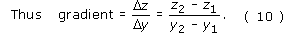

Figure 22: A straight-line graph of z against y
You may find it useful to remember that the gradient of a graph is given by its ‘rise’ over its ‘run’.
There are several points to notice about this definition.
It applies only to straight-line graphs.
The units of the gradient are the units of z divided by the units of y.
The gradient of a straight-line graph is a constant (a number, multiplied by an appropriate unit). The same constant is obtained, no matter which two points (see P1 and P2 in Figure 22) are used to determine it.
The gradient of a straight-line graph can be positive, negative or zero. Equation 10 assigns a positive gradient to a graph sloping from bottom left to top right, as in Figure 22 for example, and a negative gradient to a graph sloping from top left to bottom right, as in Figure 15. A horizontal line has zero gradient.
Although the appearance of a graph can be changed by plotting the points on different scales (compare Figures 23a and b for example) the gradient, defined by Equation 10, is independent of the shape or size of the graph paper or display screen.

Figure 23: Two graphs constructed from the same data but plotted with different scales. The gradients are the same, 4 ×103 kg m−3